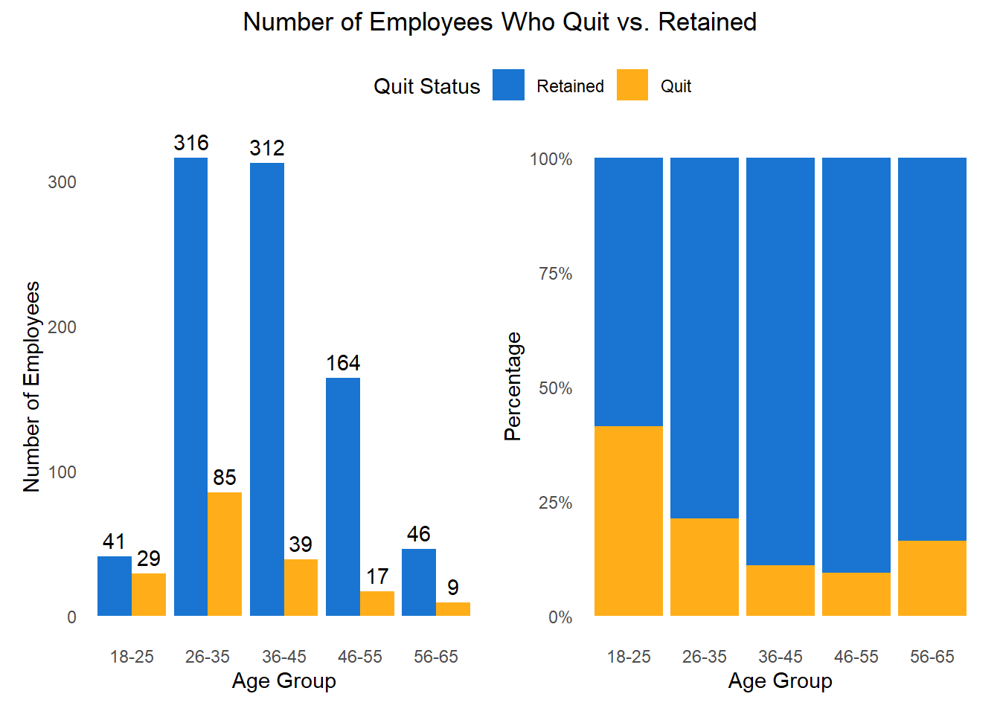
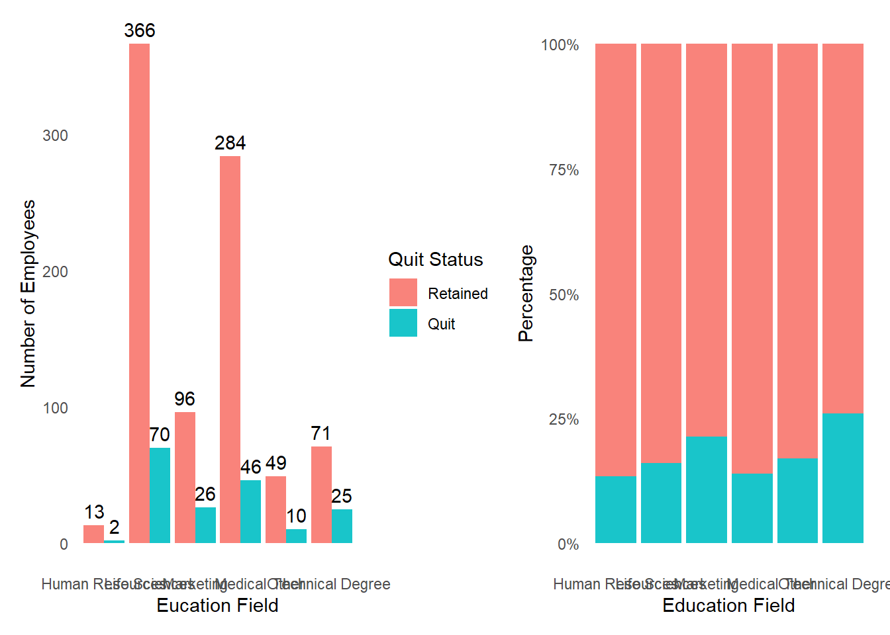

This analysis focuses on employee attrition using data from the IBM HR Analytics Employee Attrition & Performance. It explores possible reasons why employees leave their jobs and the process used to identify these insights. The examples provided illustrate key factors influencing attrition, but in a real-world setting, a more comprehensive analysis would be necessary.
1 The Role of Age in Employee Attrition: Trends and Insights
Visualizing the age distribution to identify natural groupings for analysis.
Code
ggplot(ibm_data, aes(x =age))+geom_histogram(fill ="#0066CC", color ="#e9ecef", alpha =0.9, bins =30)+stat_bin(aes(label =after_stat(count)), geom ="text", vjust =-0.5, size =3)+theme_minimal()+theme(panel.grid.major =element_blank(), panel.grid.minor =element_blank())+labs(title ="Age Distribution of Employees")
`stat_bin()` using `bins = 30`. Pick better value with `binwidth`.
Code
# Modify data# added two columns, (1) was re-coding 0 and 1 into quit and not quit, (2) group aged into groupsibm_data<-ibm_data|>mutate( quit_status =ifelse(attrition==1, "Quit", "Not Quit"), age_group =factor(cut(age, breaks =c(18, 25, 35, 45, 55, 65), labels =c("18-25", "26-35", "36-45", "46-55", "56-65"), right =FALSE)))
Code
# Number of Employees Who Quit vs. Stayed Across Age Groupsggplot(ibm_data, aes(x =age_group, fill =factor(quit_status), pattern =factor(quit_status)))+geom_bar_pattern(position ="dodge", pattern_density =0.1, pattern_fill ="white", pattern_color ="#0066CC", alpha =0.9)+geom_text(stat ="count", aes(label =after_stat(count)), position =position_dodge(width =0.9), vjust =-0.2)+scale_fill_manual(values =c("Not Quit"="#0066CC", "Quit"="orange"), labels =c("Not Quit", "Quit"))+scale_pattern_manual(values =c("Not Quit"="stripe", "Quit"="none"))+labs(x ="Age Group", y ="Count", fill ="Quit Status")+theme_minimal()+labs(title ="Number of Employees Who Quit vs. Stayed Across Age Groups")+theme(legend.key.size =unit(1.5, 'cm'))+guides( pattern ="none", fill =guide_legend(override.aes =list(pattern =c("stripe", "none"))),)+theme(legend.position ="right")+theme(panel.grid.major =element_blank(), panel.grid.minor =element_blank())

Code
# Quit and Retention Percentages by Age Group# Stacked + percentggplot(ibm_data, aes(x =age_group, fill =quit_status))+geom_bar(position ="fill", alpha=0.9)+scale_y_continuous(labels =scales::percent)+scale_fill_manual(values =c("Not Quit"="#0066CC", "Quit"="#FF9900"))+labs(x ="Age Group", y ="Percentage", fill ="Quit Status", title ="Quit and Retention Percentages by Age Group")+theme_minimal()+theme(panel.grid.major =element_blank(), panel.grid.minor =element_blank())

2 Education
Source Code
---title: "Understanding Employee Attrition: Data-Driven Insights"author: ""date: ""format: htmlinclude-after-body: abbrv_toc.htmlnumber-sections: truetoc: truetoc-depth: 2toc-title: Contents---This analysis focuses on employee attrition using data from the [*IBM HR Analytics Employee Attrition & Performance*](https://www.kaggle.com/datasets/pavansubhasht/ibm-hr-analytics-attrition-dataset). It explores possible reasons why employees leave their jobs and the process used to identify these insights. The examples provided illustrate key factors influencing attrition, but in a real-world setting, a more comprehensive analysis would be necessary. ## The Role of Age in Employee Attrition: Trends and Insights {toc-text="Age"}```{r}#| output: false#| include: false#| warning: falselibrary(tidyverse)library(janitor)library(ggpattern)library(here)ibm_data <-read_csv(here("ibm_dataset","ibm_dataset.csv")) |>clean_names()```Visualizing the age distribution to identify natural groupings for analysis.```{r}#| warning: false#| output: true#| message: falseggplot(ibm_data, aes(x = age)) +geom_histogram(fill ="#0066CC", color ="#e9ecef", alpha =0.9, bins =30) +stat_bin(aes(label =after_stat(count)), geom ="text", vjust =-0.5, size =3) +theme_minimal() +theme(panel.grid.major =element_blank(), panel.grid.minor =element_blank()) +labs(title ="Age Distribution of Employees")``````{r}#| output: false#| warning: false#| message: false# Modify data# added two columns, (1) was re-coding 0 and 1 into quit and not quit, (2) group aged into groupsibm_data <- ibm_data |>mutate(quit_status =ifelse(attrition ==1, "Quit", "Not Quit"),age_group =factor(cut(age, breaks =c(18, 25, 35, 45, 55, 65), labels =c("18-25", "26-35", "36-45", "46-55", "56-65"),right =FALSE)) )``````{r}#| output: true#| warning: false# Number of Employees Who Quit vs. Stayed Across Age Groupsggplot(ibm_data, aes(x = age_group, fill =factor(quit_status), pattern =factor(quit_status))) +geom_bar_pattern(position ="dodge", pattern_density =0.1, pattern_fill ="white", pattern_color ="#0066CC", alpha =0.9) +geom_text(stat ="count", aes(label =after_stat(count)), position =position_dodge(width =0.9), vjust =-0.2) +scale_fill_manual(values =c("Not Quit"="#0066CC", "Quit"="orange"), labels =c("Not Quit", "Quit")) +scale_pattern_manual(values =c("Not Quit"="stripe", "Quit"="none")) +labs(x ="Age Group", y ="Count", fill ="Quit Status") +theme_minimal() +labs(title ="Number of Employees Who Quit vs. Stayed Across Age Groups") +theme(legend.key.size =unit(1.5, 'cm')) +guides(pattern ="none", fill =guide_legend(override.aes =list(pattern =c("stripe", "none"))), ) +theme(legend.position ="right") +theme(panel.grid.major =element_blank(), panel.grid.minor =element_blank()) ``````{r}#| output: true#| warning: false# Quit and Retention Percentages by Age Group# Stacked + percentggplot(ibm_data, aes(x = age_group, fill = quit_status)) +geom_bar(position ="fill", alpha=0.9) +scale_y_continuous(labels = scales::percent) +scale_fill_manual(values =c("Not Quit"="#0066CC", "Quit"="#FF9900")) +labs(x ="Age Group", y ="Percentage", fill ="Quit Status", title ="Quit and Retention Percentages by Age Group") +theme_minimal() +theme(panel.grid.major =element_blank(), panel.grid.minor =element_blank())``````{r}#| output: false#| include: false#| warning: false# graph with quitting status by group age with no patternggplot(ibm_data, aes(x = age_group, fill =factor(quit_status))) +geom_bar(position ="dodge") +geom_text(stat ="count", aes(label =after_stat(count)), position =position_dodge(width =0.9), vjust =-0.2) +scale_fill_manual(values =c("Not Quit"="green4", "Quit"="orange"), labels =c("Not Quit", "Quit")) +# Custom labels for legendlabs(x ="Age Group", y ="Count", fill ="Quit Status") +theme_classic()```## Education {toc-text="Education"}```{r}#| output: false#| include: false#| warning: false#ibm_data |> # group_by(department) |> #summarise(mean_job_sat = mean(job_satisfaction)) |> #ggplot() +# geom_point(aes(x = fct_infreq(department),# y = mean_job_sat))ggplot(ibm_data) +geom_jitter(aes(x = department,y = job_satisfaction), width =0.2, height =0.2)ggplot(ibm_data) +geom_jitter(aes(x = age,y = job_satisfaction, color = age), width =0.18, height =0.18)ggplot(ibm_data) +geom_jitter(aes(x = job_level,y = job_satisfaction, color = department), width =0.18, height =0.18) ibm_data |>filter(department =="Research & Development") |>ggplot() +geom_jitter(aes(x = age,y = job_satisfaction, color = over_time,), width =0.15, height =0.15)ggplot(ibm_data) +geom_jitter(aes(x = quit_status,y = job_satisfaction, color = department))```